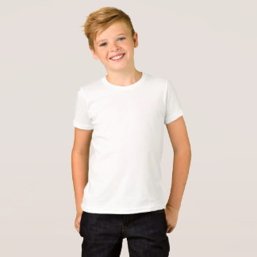

Product Announcements

We have new kidsshirt available with our famous sun warning mechanism. Visit the Store now to buy some! Both styles are available for both boys and girls in different sizes.
More Product Announcements
Company Updates
Our new company update video is out!
More Company Updates
New Science
Sunburn and p53 in the onset of skin cancer
SQUAMOUS cell carcinoma of the skin (SCC) can progress by stages: sun-damaged epidermis, with individual disordered keratin-ocytes; actinic keratosis (AK), spontaneously regressing keratin-ized patches having aberrant cell differentiation and proliferation; carcinoma in situ; SCC and metastasis1–3. To understand how sunlight acts as a carcinogen, we determined the stage at which sunlight mutates the p53 tumour-suppressor gene and identified a function for p53 in skin. The p53 mutations induced by ultraviolet radiation and found in >90% of human SCCs4,5 were present in AKs. Inactivating p53 in mouse skin reduced the appearance of sunburn cells6, apoptotic keratinocytes generated by overexposure to ultraviolet. Skin thus appears to possess a p53-dependent 'guardian-of-the-tissue' response to DNA damage which aborts precancerous cells. If this response is reduced in a single cell by a prior p53 mutation, sunburn can select for clonal expansion of the p53-mutated cell into the AK. Sunlight can act twice: as tumour initiator and tumour promoter.
Ziegler, Annemarie, et al. "Sunburn and p53 in the onset of skin cancer." Nature 372.6508 (1994): 773.
Learn more
More New Science